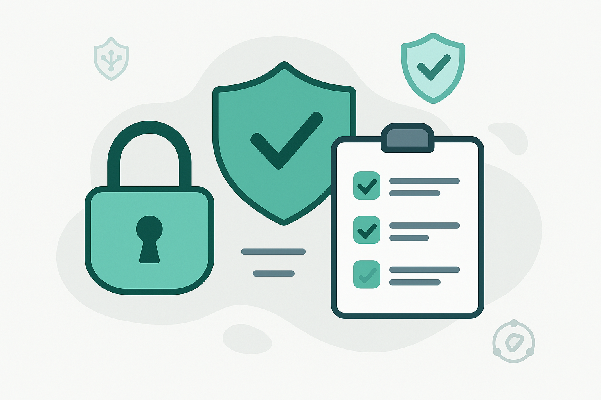

Bem-vindo! Proteja-se no Mundo Digital.
Este espaço é dedicado a mantê-lo informado sobre as últimas notícias, alertas de golpes, perigos atuais no mundo digital e dicas essenciais de segurança da informação. Nosso objetivo é fornecer conhecimento para que você possa navegar na internet e utilizar seus dispositivos com mais segurança.
Explore as seções abaixo para se atualizar e teste seus conhecimentos com nosso quiz interativo. A informação é sua melhor defesa!
Notícias e Alertas Recentes
Novo golpe no YouTube usa vídeos de cheats para espalhar vírus Arcane Stealer que rouba dados.
Cibercriminosos estão utilizando vídeos no YouTube que prometem cheats e vantagens em jogos populares para disseminar o malware Arcane Stealer. Este vírus é projetado para roubar informações pessoais e credenciais de acesso dos usuários infectados. É crucial que os jogadores estejam atentos a promessas duvidosas e evitem baixar arquivos de fontes não confiáveis, mesmo que pareçam oferecer benefícios em seus jogos favoritos. A atenção a links suspeitos e o uso de soluções de segurança robustas são essenciais para evitar esse tipo de ameaça.
CES 2025 revela inovações em gadgets e eletrodomésticos inteligentes, levantando questões sobre cibersegurança.
A Consumer Electronics Show (CES) 2025, realizada em Las Vegas, apresentou centenas de novos gadgets e eletrodomésticos inteligentes. Essas inovações, embora tragam conveniência, também introduzem novos vetores de ataque e preocupações com a segurança cibernética. É fundamental que tanto fabricantes quanto consumidores considerem os aspectos de segurança desde o design até o uso diário desses dispositivos, implementando medidas como senhas fortes, atualizações regulares e segmentação de rede para mitigar os riscos associados à crescente conectividade dos lares.
Gerenciar assinaturas e pagamentos recorrentes é crucial para controle financeiro e segurança.
Com o aumento de serviços por assinatura, muitos usuários acumulam dezenas de pagamentos recorrentes, dificultando o controle financeiro e abrindo brechas para cobranças indevidas ou esquecidas. É importante revisar periodicamente todas as assinaturas ativas, cancelar aquelas que não são mais utilizadas e monitorar as faturas para identificar quaisquer despesas suspeitas. Ferramentas de gerenciamento financeiro e atenção constante podem ajudar a economizar dinheiro e evitar surpresas desagradáveis, além de proteger contra fraudes em serviços menos seguros.
Quase 19% dos brasileiros já foram vítimas de roubo de login da Netflix, alerta estudo.
Um estudo recente revela que o Brasil é um dos países mais afetados pelo roubo de credenciais de acesso da Netflix na América Latina, com 18,8% dos usuários relatando terem sido vítimas desse tipo de crime. O roubo de contas pode levar ao uso não autorizado do serviço, alterações nas configurações e, em alguns casos, ao comprometimento de outras contas caso senhas sejam reutilizadas. Recomenda-se o uso de senhas únicas e fortes, além da ativação da autenticação de dois fatores, onde disponível, para proteger as contas de streaming.
Pesquisadores da Kaspersky alertam para fraudes online envolvendo falsas ofertas do iPhone 16.
Com a expectativa do lançamento do iPhone 16, cibercriminosos estão aproveitando para disseminar fraudes online. Pesquisadores da Kaspersky identificaram diversos golpes que incluem falsas pré-encomendas do aparelho e ofertas de suporte técnico inexistente. Os usuários devem desconfiar de ofertas muito vantajosas, verificar a autenticidade dos sites e evitar fornecer dados pessoais ou financeiros em plataformas não oficiais. A compra de produtos deve ser feita apenas através de canais de venda autorizados pela Apple para garantir a segurança da transação.
Ataques contra celulares crescem 70% na América Latina, com Brasil entre os mais afetados.
O Panorama de Ameaças 2024 da Kaspersky revela um aumento alarmante de 70% nos ataques contra dispositivos móveis na América Latina, saltando de 1,25 milhão de tentativas em 2020 para 3,9 milhões este ano. Brasil, México e Equador lideram o ranking dos países mais visados. Esse crescimento destaca a necessidade urgente de os usuários adotarem medidas de segurança robustas em seus smartphones, como o uso de antivírus, atualizações constantes de software e cautela ao baixar aplicativos ou clicar em links suspeitos.
Aprenda a criptografar pendrives para proteger seus arquivos contra vazamentos.
O uso de pendrives para transportar arquivos é comum, mas pode expor informações sensíveis em caso de perda ou roubo. Criptografar o dispositivo é uma medida eficaz para proteger os dados, tornando-os inacessíveis para quem não possui a chave de descriptografia. Existem diversas ferramentas e métodos, tanto nativos dos sistemas operacionais quanto de terceiros, que permitem realizar essa proteção. Este guia explora como realizar a criptografia e garantir a segurança dos seus arquivos portáteis.
Seu celular realmente escuta suas conversas? Descubra como se proteger.
A preocupação de que smartphones possam estar ouvindo conversas privadas é crescente. Embora a escuta ativa para fins publicitários seja controversa e tecnicamente complexa em larga escala, permissões de microfone concedidas a aplicativos podem ser um risco. Para se proteger, revise as permissões de aplicativos, desative o acesso ao microfone para apps que não necessitam dele, utilize assistentes de voz com cautela e considere o uso de capas de privacidade para microfones. Manter o sistema operacional atualizado também é fundamental.
Vazamento de dados no Roblox: saiba como verificar e proteger sua conta.
A popular plataforma de jogos Roblox pode ser alvo de vazamentos de dados, expondo informações de seus usuários. É importante que jogadores e pais estejam cientes dos riscos e saibam como verificar se suas contas foram comprometidas. Medidas como habilitar a autenticação de dois fatores, usar senhas fortes e únicas, e monitorar atividades suspeitas na conta são essenciais para proteger os dados e evitar acessos não autorizados, garantindo uma experiência de jogo mais segura para crianças e adolescentes.
Dicas Essenciais de Segurança para o seu Dia a Dia
- Crie Senhas Fortes e Únicas: Use combinações complexas de letras maiúsculas e minúsculas, números e símbolos. Evite usar a mesma senha para múltiplas contas. Considere um gerenciador de senhas.
- Desconfie de Mensagens Suspeitas (Phishing): Não clique em links ou baixe anexos de e-mails, SMS ou mensagens instantâneas de remetentes desconhecidos ou que pareçam suspeitos, mesmo que pareçam ser de empresas conhecidas. Verifique sempre o endereço do remetente e, na dúvida, acesse o site oficial da empresa diretamente no navegador.
- Mantenha Seus Dispositivos e Softwares Atualizados: Instale as atualizações do sistema operacional, navegador, antivírus e outros aplicativos assim que estiverem disponíveis. Elas frequentemente corrigem falhas de segurança.
- Ative a Autenticação de Dois Fatores (2FA): Sempre que possível, habilite o 2FA em suas contas online. Isso adiciona uma camada extra de segurança, exigindo um segundo código (além da senha) para login.
- Cuidado com Redes Wi-Fi Públicas: Evite realizar transações financeiras, inserir senhas ou acessar informações sensíveis em redes Wi-Fi abertas (de cafés, aeroportos, etc.). Se precisar usá-las, utilize uma VPN (Rede Privada Virtual) para criptografar sua conexão.
- Faça Backups Regulares dos Seus Dados: Crie cópias de segurança dos seus arquivos importantes (documentos, fotos, vídeos) em um HD externo ou serviço de armazenamento em nuvem. Isso protege contra perda de dados por falha de hardware, malware (como ransomware) ou exclusão acidental.
- Pense Antes de Clicar e Baixar: Verifique a procedência de links e arquivos antes de abri-los ou baixá-los, especialmente de fontes não confiáveis ou anúncios pop-up.
- Eduque-se Continuamente sobre Segurança: As ameaças cibernéticas estão sempre evoluindo. Mantenha-se informado sobre novos golpes e as melhores práticas para se proteger.